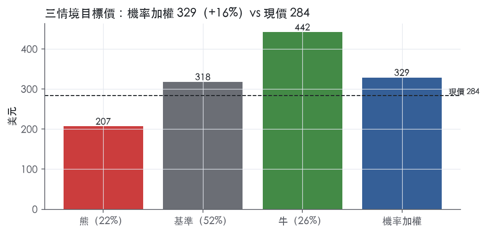
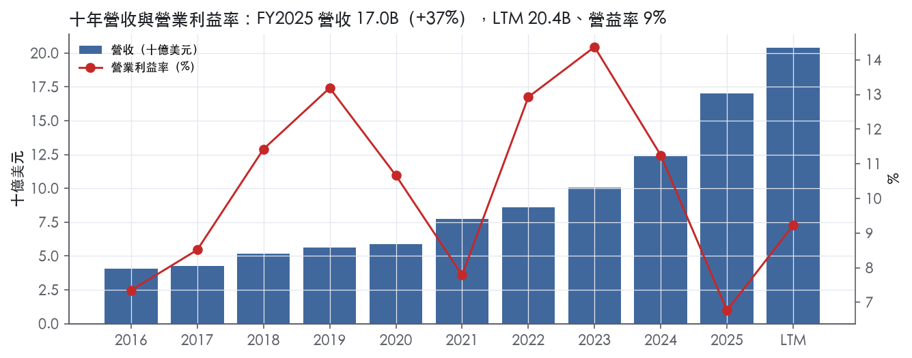
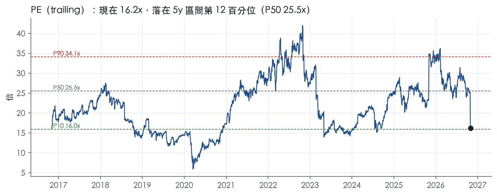
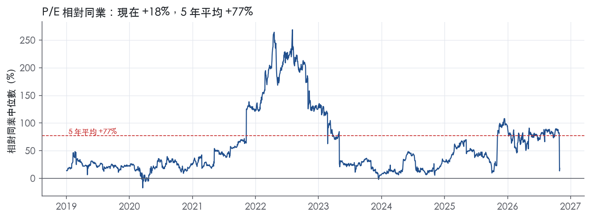
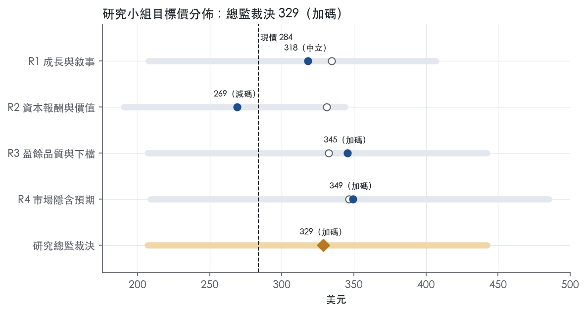
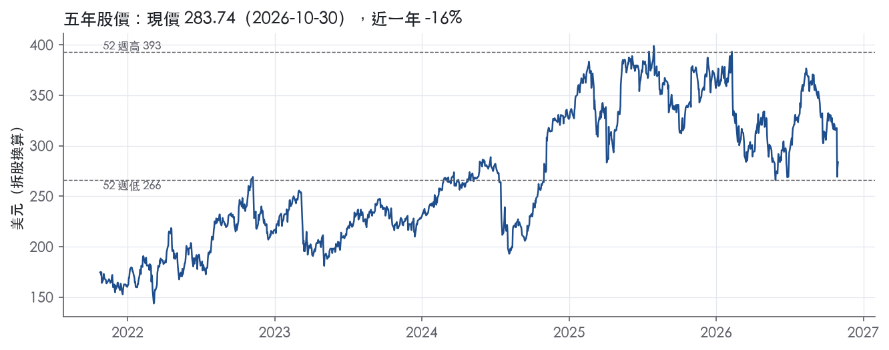

評等總表 › 金融 › LPLA
倍數持平、盈餘推升，溫和看多｜評等 加碼｜目標價 329
| 報告日 | 評等 | 目標價 | 當時股價 | 超額報酬 |
|---|---|---|---|---|
| 2026-10-30 | 加碼 | 329 | 284 | +6.3% |
| 評等 | 加碼（邊界，鄰近中立） |
| 12 個月目標價 | 329 美元 |
| 現價 | 283.74 美元（2026-10-30） |
| 預期報酬 | 股價 +15.9%＋股息 0.4%＝總報酬 +16.3%；同業籃門檻 10.0%，超額 +6.3% |
| 估值方法 | P/E 14.0x，套在第 5–8 季的EPS（也就是一年後的未來四季） |
| 三情境 | 熊 207／基準 318／牛 442 |
| 研究流程 | 四位研究員兩輪辯論＋研究總監裁決 |
| 資料來源 | SEC EDGAR XBRL、Tiingo、FRED（全免費） |
倍數持平、盈餘推升，溫和看多（研究總監裁決，四位研究員兩輪辯論後）
評等 加碼（邊界，鄰近中立）｜12 個月目標價 329 美元（總監三情境機率加權 326 與研究員中位數 332 各半）｜現價 283.74（2026-10-30）
預期報酬：股價 +15.9%＋股息 0.4%＝總報酬 +16.3%。同業籃門檻 10.0%，超額 +6.3%，離中立的分界不到三個百分點，屬邊界評等（落在其他級距的機率約四成）。
估值方法：P/E 14.0x，套在第 5–8 季的EPS（也就是一年後的未來四季）。三情境：熊 207（22%）／基準 318（52%）／牛 442（26%）。
什麼會讓研究總監改變看法：Q4財報留存率低於80%或run-rate EBITDA低於400M（假設門檻），倍數往12.0x靠並轉中性；2027Q1調整後稅前利益增速高出毛利增速3pp以上且招募恢復年增，營益率y2上調至10%、倍數重估至帶P50 16.5x。
| 過去四季（實際，FY2026Q3） | 未來四季 | 第 5–8 季 | 第 9–12 季 | |
|---|---|---|---|---|
| 營收（B） | 20.4B | 22.4B | 24.2B | 25.7B |
| 營收成長 | 31.0% | 10.0% | 8.0% | 6.0% |
| 營業利益率 | 9.2% | 9.2% | 9.6% | 9.8% |
| EPS（美元） | 17.49 | 19.87 | 22.71 | 25.01 |
| EPS 成長 | 61.1% | 13.6% | 14.3% | 10.1% |
| 每股股息（美元） | 1.20 | 1.20 | 1.20 | 1.20 |
| P/E（現價） | 16.2x | 14.3x | 12.5x | 11.3x |
| 股息殖利率（現價） | 0.4% | 0.4% | 0.4% | 0.4% |
過去四季為申報數字；預測為研究總監的假設、程式計算。倍數與殖利率都用現價計算，用來看現價對應各期獲利的高低。
| 情境 | 機率（歷史） | 故事 | 未來四季營收成長 | 第 5–8 季營益率 | 倍數 | 目標價 | 股價漲跌 |
|---|---|---|---|---|---|---|---|
| 熊 | 22%（21%） | 本行下行路徑（GDP 0.3、聯邦基金3.88、利差2.30）下風險表第5條市場下跌壓縮顧問資產、第2條留存跌破80%、第1條利率低於基準壓ICA，淨負債6.59B放大股權下檔，回購暫停 | 1.0% | 8.4% | 12.0x | 207 | -27.1% |
| 基準 | 52%（53%） | 轉換完成留存約83%，有機成長5%加顧問費占比上升，轉換後費用退場帶營益率到9.6%，回購由FCF支應，倍數不重評價 | 10.0% | 9.6% | 14.0x | 318 | 12.0% |
| 牛 | 26%（26%） | Commonwealth留存≥83%、招募恢復年增、降槓桿如期，本行基準利率4.38撐ICA，溢價向3年平均部分回升、倍數越過帶P50 16.5x | 12.0% | 10.3% | 17.5x | 442 | 55.8% |
目標價由程式依研究總監的驅動與倍數計算；機率由研究總監給定。括號內是歷史頻率：把這檔股票過去十年 12 個月報酬的波動形狀，置中在基準情境，結果落在各情境附近的比例。

四位研究員用不同方法各自估值，回應研究總監的質疑後交出第二輪，最後由總監逐點裁決。各研究員的主張見第七章，裁決理由見第八章，完整論證見《研究底稿》。
| 立場（一輪→二輪） | 加權目標價（一輪→二輪） | 評等（一輪→二輪） | 第二輪倍數 | 熊～牛目標價 | |
|---|---|---|---|---|---|
| R1 成長與敘事 | 看多→看多 | 335→318 | 加碼→中立 | 16.2x | 208～407 |
| R2 資本報酬與價值 | 看多→看空 | 331→269 | 加碼→減碼 | 13.7x | 190～344 |
| R3 盈餘品質與下檔 | 看多→看多 | 333→345 | 加碼→加碼 | 15.0x | 207～442 |
| R4 市場隱含預期 | 看多→看多 | 347→349 | 加碼→加碼 | 14.0x | 209～485 |
| 研究總監裁決 | 看多 | 329 | 加碼 | 14.0x | 207～442 |
目標價由程式依各自的驅動與倍數計算；評等＝機率加權總報酬 − 同業籃門檻。
LPL Financial 是美國最大的獨立券商（independent broker-dealer），同時是主要的投資顧問業者與頭部託管機構¹。公司支援超過32,000名財務顧問，以及約1,200家金融機構的財富管理業務，服務並託管約2,400B美元的經紀與顧問資產¹。LPL不製造任何自有金融產品，也不從事市場造市或投資銀行業務，其商業模式刻意與產品製造端的利益衝突隔開，藉此讓旗下顧問能提供「低利益衝突」的建議¹。公司本質上是一個B2B2C的基礎設施與平台提供者：客戶是獨立顧問與機構，而非直接服務散戶投資人。LPLA FY2025營收16.99B美元，LTM（至FY2026Q3）營收已達20.40B美元，顯示近兩年規模急速擴張。
LPL不依傳統「事業部」切分，而是依顧問加盟模式與產品線分類，10-K未揭露各線別獨立營收比重。顧問關係分為三大類：獨立執業顧問（享有80-100%的佣金與顧問費拆分，遠高於captive通路的30-50%）、獨立員工顧問模式（略低payout但享全套員工福利）、以及透過獨立RIA與LPL Enterprise合作的顧問（Independent RIA顧問保留100%顧問費，另付custody、交易與行政服務費）¹。此外LPL Enterprise服務超過7,400名顧問、約1,200家機構，另有約4,200名顧問透過保險公司通路與LPL合作¹。
產品面分三類資產池：(1) 顧問費平台（fee-based），截至2025年12月31日顧問資產規模1,392.7B美元¹；(2) 佣金類商品（commission-based），同期規模977.9B美元，包含年金、基金、股票、固定收益、另類投資等¹；(3) 客戶現金管理方案（含兩個FDIC保險的sweep帳戶），同期規模61.0B美元¹。顧問費資產佔比持續擴大，是公司收入結構轉向更穩定、更經常性的關鍵趨勢。另外PTC子公司提供信託與IRA託管服務，Blaze提供顧問用交易與投組再平衡系統，均屬輔助性產品線，10-K未揭露個別營收貢獻。
客戶集中度極低——FY2025無單一顧問或機構關係佔顧問費與佣金營收超過2%，無單一顧問超過1%¹。這代表公司營收高度分散，不存在關鍵客戶風險，但也意味成長必須靠淨增顧問與資產，而非既有大客戶擴張。通路分布包括：獨立顧問（主力）、獨立員工顧問、Independent RIA（約600家獨立機構、約6,240名顧問）、機構通路（約1,200家金融機構）、保險公司關聯顧問（約4,200人）¹。地理上為美國本土業務，服務顧問收藏超過1,160萬個客戶帳戶，10-K未按州或區域拆分營收¹。
FY2025Q4（2025-12-31）營收4.93B美元，年增40.4%，營益率回升至8.1%，EPS 3.80美元（dv相關欄位）。FY2026Q1營收4.94B美元、年增34.6%、EPS 4.43美元。FY2026Q2淨利379M美元、EPS 4.74美元，較去年同期大增39%；調整後EPS年增29%至5.84美元，調整後毛利1,618M美元，Core G&A年增22%至519M美元，調整後稅前利潤年增30%至635M美元²。該季總客戶資產年增34%至2,600B美元，顧問資產年增46%至1,500B美元，佔比升至60.4%；有機淨新增資產23B美元（年化4%成長）；資產招募達25B美元，年增35%，過去十二個月累計招募資產89B美元²。公司同時宣布董事會核准2.5B美元股票回購額度增額，並恢復回購（當季回購309M美元）²。
FY2026Q3淨利357M美元，EPS 4.52美元，較去年同期淨損30M美元（EPS -0.37美元）大幅轉正，但較上季379M美元小幅下滑³。調整後EPS年增15%至5.97美元，調整後毛利年增12%至1,662M美元，Core G&A年增11%至532M美元，調整後稅前利潤年增13%至641M美元³。總客戶資產年增11%至2,600B美元，顧問資產年增16%至1,600B美元，佔比升至60.9%；有機淨新增資產29B美元（年化5%成長）；資產招募24B美元，年減26%，TTM招募資產81B美元³。公司將2026年Core G&A展望區間收斂為2,140-2,160M美元（含Commonwealth相關費用）³。從FY2026Q2到Q3，淨利與EPS季比走弱（379M→357M美元；4.74→4.52美元），主要反映Core G&A與費用持續爬升、招募資產動能減速，但有機成長與顧問資產增速仍穩健。
公司將成長引擎定義為兩大軸線：提升既有顧問生產力（擴大每位顧問管理的資產、推廣business services與planning and advice services以帶動經常性收入）、以及吸引新資產進平台（透過擴大顧問加盟模式與機構通路，與Prudential、M&T Bank、BMO Financial Advisors等機構建立策略合作）¹。公司強調其規模優勢形成正向循環：持續技術再投資降低顧問服務成本、產品供應商端的規模經濟、業界最高平均payout率，三者共同驅動顧問留存與招募¹。近期最大的成長催化劑是併購Commonwealth Financial Network，管理層在2026年Q3法說中將預估run-rate EBITDA上修至415M美元，資產留存率預期約83%，預計於2026年第四季完成轉換³；CEO同時提到已開始對顧問推出自有AI代理工具Cyan³。公司也持續透過Liquidity & Succession方案收購退休顧問業務，FY2026Q3再投入約20M美元完成三筆交易³。整體而言，LPL的成長故事已從單純的顧問招募轉向「規模＋併購整合＋顧問費資產佔比提升」三線並進，Commonwealth整合進度與資產留存率是未來一到兩季最關鍵的執行變數。公司LTM ROIC與FCF轉負（FY2025 FCF -0.98B美元，dv/）顯示近期大型併購與資本支出壓縮了現金轉換效率，是成長敘事下需要關注的代價。

LPL 有窄護城河：規模帶來的成本優勢，加上機構通路的轉換成本，足以讓 ROIC 在 5 年以上高於資本成本，但還不夠支撐 10 年。趨勢判為變窄，因為 ROIC 從 FY2023 的 23.1%掉到 FY2025 的 9.1%，已經低於資本成本代理值 10.0%。近兩年的擴張主要靠併購買進，增量資本的報酬明顯變差。
成本優勢是主要來源。 公司說明「since some of the costs of supporting advisors are fixed, growth in the number of advisors that we serve reduces the average fixed cost per advisor」¹。自清算平台讓公司能「control client data, more efficiently process and report trades, facilitate platform development, reduce costs」¹。身為大型產品分銷商，公司「have been able to obtain attractive economics from product sponsors」¹。獨立券商通路「is highly fragmented and consists primarily of regional firms that rely on third-party custodians and technology providers」¹。中小同業沒有自清算能力，單位成本先天比 LPL 高，這是 LPL 能同時給出高 payout 又維持獲利的根本原因。
轉換成本是次要來源，集中在機構通路。 LPL 為約 1,200 家機構、超過 7,400 名顧問提供基礎設施，這些機構自行承擔技術、基礎設施與監管要求可能「cost-prohibitive」¹。機構一旦把清算、合規、技術整套外包給 LPL，換供應商就得重建後台，轉換成本確實存在。
獨立顧問端的轉換成本則偏弱。公司自己就從 wirehouses、地區券商、銀行、其他 RIA 與獨立券商招攬顧問¹。顧問帶著客戶轉換平台在這個產業是常態，對手同樣能反向挖走 LPL 的顧問。
不列入的類別。 無形資產不列：多數顧問以自己的名號執業¹，LPL 品牌對終端投資人沒有定價力。網路效應與效率規模也不列，原文找不到平台價值隨顧問人數遞增、或市場只容得下少數業者的證據。
數字支持窄護城河，但最新一年已經跌破門檻。
ROIC 長期高於資本成本。
衝突一：量化底稿用的是 ROE，會高估護城河。 底稿顯示 ROE 十年平均 39.6%，減去資本成本後為 29.7%，有資料的 9 年都高於資本成本。但淨負債從 1.43B 美元升到 6.13B 美元，P/TBV 高達 202.8x（band.p_tbv 全期 P50），代表有形權益極薄、ROE 被槓桿大幅放大。因此評級以 ROIC 為準，不採 ROE。
衝突二：利潤率並不穩定。 稅前利益率標準差 2.5%，區間從 6.8% 到 14.4%，高低點落差大。營益率在 FY2021 只有 7.8%，FY2023 升到 14.4%。我判斷這主要反映客戶現金方案（61.0B 美元¹）的利率敏感度，而不是競爭地位的變化。不過這也說明利潤率高點不是護城河的功勞，寬護城河的評級因此不成立。
衝突三：FY2025 跌破門檻。 FY2025 ROIC 9.1%低於資本成本，是把趨勢判為變窄的直接證據。
第一個風險是 payout 競爭。公司自稱「offer our advisors the highest average payout rates in our industry」¹。規模效益相當大一部分已經讓給顧問，只要對手抬高 payout，LPL 留得住的超額報酬就會被壓縮。
第二個風險是併購定價。Atria 已在 2025 年第四季完成轉換，Commonwealth 預計 2026 年第四季完成轉換¹。用併購買規模會推高投入資本，FY2025 ROIC 降到 9.1%，正是這個代價。
第三個風險是監管。公司揭露，新的行為準則「could increase the complexity and costs of our compliance or affect our revenue streams」¹。DOL 的 Retirement Security Rule 目前仍處於暫停狀態¹，一旦恢復，佣金類收入會直接受影響。
第四個風險是託管商品化。獨立 RIA 可以從多家第三方業者中挑選託管服務¹，這會壓低清算與託管服務的議價能力。
目標倍數應與同業持平，不給溢價：窄護城河只支撐 5 年左右的超額報酬，而且 FY2025 ROIC 已低於資本成本。5 年 P/E 中位數 25.5x對應的是 ROIC 超過 20% 的年代，不應當作均值回歸的目標。只有在 Commonwealth 完成轉換、ROIC 回到 10.0% 以上之後，才值得重新評估是否給予溢價。
| 指標 | 最新 | 十年平均 | 標準差 | 最低 | 最高 |
|---|---|---|---|---|---|
| ROIC | 9.1% | 16.3% | 4.5% | 9.1% | 23.1% |
| 營業利益率 | 6.8% | 10.4% | 2.5% | 6.8% | 14.4% |
| FCF 利潤率 | -5.8% | 5.7% | 6.7% | -5.8% | 19.1% |
| ROE | 20.9% | 39.6% | 10.7% | 20.9% | 56.0% |
程式計算。資本成本代理值（10 年債＋5%）：10.0%；ROIC 平均減資本成本：6.3%；ROIC 有資料的 9 年中，高於資本成本 7 年。
LPL的SBC佔營收、稀釋股數變動、股利加回購占淨利三項計分燈號全部為綠燈，沒有股權稀釋或過度發放的跡象。但年度表顯示FY2025營運現金流為-0.41B、FCF為-0.98B，是十年期間唯一負值的一年，與同年淨利0.86B明顯脫鉤（is/cf.FY2025），單靠這一點就不能給高品質評級。LTM（至FY2026Q3）現金流已回到FCF 1.01B的正值，顯示問題有緩解但尚未完全證明是純粹一次性。
從FY2022到FY2025，CFO與淨利的差距逐年擴大且方向翻轉：FY2022 CFO 1.95B高於淨利0.85B，FY2023 CFO 0.51B已低於淨利1.07B，FY2024 CFO 0.28B遠低於淨利1.06B，FY2025 CFO轉為-0.41B但淨利仍為0.86B（年度表）。拆到季度可以看到問題集中在單一季度：FY2025Q3 CFO為-1.73B、FCF為-1.87B，同期淨利為-0.03B（近八季表），這一季的現金流出規模遠超過該季度的虧損金額，代表是資產負債表項目（應收/應付、客戶現金結算等）的時點性移動，而非盈餘本身灌水。10-K Item 7提供的段落僅涵蓋前瞻性聲明與業務概述，沒有包含對現金流量表的逐項說明，因此無法用原文佐證FY2025Q3現金流出的具體成因，只能視為揭露缺口⁴。進入FY2025Q4與FY2026各季，CFO與FCF皆轉正且逐季穩定（0.79B／0.29B／0.40B／0.30B），LTM因此回升至1.01B（近八季表），顯示FY2025Q3更像是單季的現金時點異常，而不是盈餘品質的系統性惡化。
FY2026Q3，GAAP淨利357M、稀釋EPS 4.52，Adjusted EPS為5.97，年增15%³。公司另外揭露Gross profit*年增12%至1,662M、Core G&A*年增11%至532M、Adjusted pre-tax income*年增13%至641M³，但新聞稿本節沒有附上完整的GAAP到非GAAP逐項調節表，無法逐項拆出金額。從損益表可以看到當季折舊攤銷（Depreciation and amortization）117.287M與其他無形資產攤銷（Amortization of other intangibles）72.844M（抄：8-K 2026-10-27損益表），這兩項多半來自Atria、Commonwealth等併購產生的無形資產攤銷，屬於非現金項目，加回有合理性。但借款利息支出（Interest expense on borrowings）105.834M是真實現金成本，若被計入調整項加回則不應該接受；目前揭露不足以確認該項是否被加回，估值時應保守假設利息費用是真實成本。
淨負債從FY2022的1.82B一路攀升到FY2023 3.18B、FY2024 4.47B、FY2025 6.13B，到最新快照已達6.59B（年度表），升幅主要對應這段期間的併購活動（Atria整合於FY2025Q4完成轉換、Commonwealth預計FY2026Q4完成轉換）¹。槓桿比率為1.93x（抄：8-K 2026-10-27），公司在前瞻聲明清單中明確列出「plans to reduce leverage」作為未來揭露重點，顯示管理層自己也認知槓桿偏高需要管理³。資本配置上，公司FY2026Q3回購301M、發放股息24M（抄：8-K 2026-10-27），計分表顯示（股利＋回購）／淨利LTM為50.7%、三年平均53.0%、十年平均65.6%，均為綠燈，顯示股東回饋沒有過度舉債支撐。稀釋股數年變動LTM為-1.3%，三年平均-0.8%，十年平均-1.4%，持續負值代表回購確實淨減少流通股數而非僅抵銷SBC稀釋。
SBC／營收LTM 0.4%、三年平均0.6%、十年平均0.6%，均遠低於3.0%綠燈門檻，股權薪酬對營收的侵蝕非常小，是真實的低風險項目。稀釋股數年變動LTM -1.3%，低於0%即為綠燈，代表公司持續用回購淨減少股數而不是靠停發股票選擇權美化EPS，這是真訊號不是會計假象。（股利＋回饋）／淨利LTM 50.7%、三年53.0%、十年65.6%皆在綠燈區，回饋股東比例穩定、沒有舉債發股利的跡象，判定為真，不是靠財務工程撐出來的指標。計分表本身沒有標出紅旗，但FY2025全年CFO/FCF轉負、且與淨利方向相反，是計分表三個項目（SBC、股數、股利回購）都沒有捕捉到的風險，必須額外點名：此現象集中在FY2025Q3單季的現金時點移動，而非全年每季皆惡化，且LTM已轉正（近八季表），10-K Item 7節錄未提供現金流量討論可供對照驗證，視為揭露不足但非確認的造假訊號，傾向判定為會計時點問題而非結構性盈餘灌水。
估值應以GAAP盈餘為主要錨點，Adjusted EPS可用於跨期比較成長動能，但無形資產攤銷加回部分合理、利息支出加回則不應接受，實質上非GAAP與GAAP的落差只能部分打折認列。淨負債持續擴大且槓桿比率1.93x仍在管理層自認偏高的區間，加上FY2025現金轉換一次性斷裂尚未完全證明只是時點問題，建議對盈餘乘數給予中等折價，不應套用歷史高分位的P/E或EV/EBITDA倍數。
| 項目 | LTM | 近三年 | 十年 | 燈號 | 規則 |
|---|---|---|---|---|---|
| SBC／營收 | 0.4% | 0.6% | 0.6% | 綠 | ≤3.0% 綠、>8.0% 紅 |
| 稀釋股數年變動 | -1.3% | -0.8% | -1.4% | 綠 | ≤0.0% 綠、>3.0% 紅 |
| （股利＋回購）／淨利 | 50.7% | 53.0% | 65.6% | 綠 | ≥50.0% 綠、<0.0% 紅 |
程式計算；燈號以 LTM（無則近三年平均）判定。
| 風險 | 觸發指標（看什麼數字、在哪裡看） | 對 EPS 的影響方向與粗略幅度 | 未來 12 個月發生機率（高／中／低） | 出處 |
|---|---|---|---|---|
| 客戶現金方案（ICA）利率收益下滑 | fed_funds（現 3.75%）走向；每季財報揭露的client cash balances（FY2026Q3為57B美元）與ICA yield | 方向：負向，幅度：中－大（公司明言revenue from client cash programs「will be impacted」若降息延續）⁵ | 高 | 10-K 年報 FY2025 Item 1A（風險因素） |
| Commonwealth整合執行失敗或留存率不如預期 | 季度法說中揭露的asset retention（現估約83%）、run-rate EBITDA（現估415M美元）、轉換完成時點（目標2026Q4） | 方向：負向，幅度：中（若留存率低於83%，整合帶來的EBITDA增量打折）³ | 中 | 8-K 財報新聞稿（2026-10-27） |
| 顧問流失／招募動能減速 | 每季Recruited assets（FY2026Q3年減26%至24B美元）、Organic net new assets年化成長率（現5%）、advisor count | 方向：負向，幅度：中（payout率若需提高以留人，淨利直接被壓縮）⁵ | 中 | ⁵³ |
| 監理與訴訟（Reg BI、DOL Retirement Security Rule、FINRA/SEC執法） | 任何新罰款/和解公告（8-K或10-Q揭露）、DOL Retirement Security Rule訴訟進度（現已暫停但未終局）、監理資本要求變動 | 方向：負向，幅度：大但不可預先量化（原文未給具體金額）⁵ | 中 | 10-K 年報 FY2025 Item 1A（風險因素） |
| 市場大幅下跌／波動降低顧問資產與交易量 | 顧問資產規模（現1.6T美元）、total client assets（現2.6T美元）、股市波動指數變化 | 方向：負向，幅度：大（advisory fee revenue與brokerage commission直接隨資產規模波動，公司明言market downturn「has had and could continue to have an adverse effect」）⁵ | 中 | 10-K 年報 FY2025 Item 1A（風險因素） |
客戶現金方案利率風險排第一，因為它是LPL收入結構中對利率最敏感、且公司自己在10-K明確點名的單一最大變數。LPL的client cash programs（含FDIC保險sweep帳戶、現金帳戶、貨幣市場帳戶）收入直接隨聯準會利率及與第三方銀行議定的費率波動，公司明言「若聯準會持續從目前水準降息，我們的營收將受影響」⁵。目前fed funds為3.75%，已從2023年高點顯著回落，FY2025營益率已從FY2024的11.2%降至6.8%，顯示利率下行壓力已部分體現在財報上。這條風險的監測指標清楚、每月可觀察（FOMC決議、每季client cash balance揭露），符合「可被監測」的要求。
Commonwealth整合排第二，因為這是未來兩季內最確定會發生、且管理層自己調升了風險敞口的事件。公司原訂FY2026Q4完成轉換，最新法說將資產留存率估到約83%、run-rate EBITDA估到415M美元³，兩個數字都是「估計」而非已實現，一旦顧問流失率高於預期，EBITDA增量會縮水，且轉換過程本身有「delays in onboarding」的風險被公司列為前瞻聲明的重要因子³。這條風險可監測性強：每季法說都會更新留存率與run-rate EBITDA兩個數字。
顧問流失與招募動能減速排第三，FY2026Q3招募資產年減26%至24B美元³，雖然organic net new assets仍有5%年化成長，但招募動能轉弱是業務引擎的早期訊號。公司在風險摘要中明確寫「若無法持續吸引高素質顧問，或現有顧問流向他處，可能面臨市占率、佣金與顧問費收入或淨利的重大下滑」，且「若被迫提高payout以維持競爭力，淨利可能顯著減少」⁵。
監理與訴訟風險排第四，雖然機率中等但單次事件的損失幅度可以很大且不可預先量化。10-K列出大量監理主體（SEC、FINRA、DOL、州證券監管機關），DOL的Retirement Security Rule雖經第五巡迴法院裁定暫停⁵，但訴訟尚未終局，未來規則重啟或新規上路都可能提高合規成本或限制收入結構⁵。這條風險的監測指標是具體的法院判決日期與監管機關公告，屬可觀測事件。
市場波動風險排第五，雖然影響幅度最大（顧問資產規模直接決定advisory fee revenue），但考量目前美股尚在高位、且公司收入分散度高（無單一顧問超過1%營收）¹，部分抵銷了單一事件衝擊，故機率評級為中。監測指標為每季顧問資產與total client assets的年增率變化。
FCF轉負與資本配置排擠效應：FY2025 FCF為-0.98B美元（dv/），淨負債已升至6.13B美元，同時公司仍在執行股票回購（FY2026Q3單季回購301M美元）與股息（0.30美元/股）³。10-K未將「FCF轉負情境下的資本配置優先順序」列為獨立風險項，但在Commonwealth整合＋高槓桿（leverage ratio 1.93x）的背景下，若盈餘不如預期，回購與股息的可持續性值得單獨追蹤，建議看每季CFO與FCF數字。
估值已修正但仍處結構性高位的敏感度：現在trailing P/E為16.2x，處5年分位12.0%，遠低於5年中位數25.5x與10年中位數21.1x，顯示市場已對上述風險部分定價，但EV/EBITDA仍達12.5x。若EPS成長不如預期（尤其Commonwealth留存率或利率雙重不如預期疊加），估值修正空間仍存在，建議以trailing P/E分位與EV/EBITDA分位做雙重監測。
現價 283.74 對應 trailing（過去四季）P/E 16.2x、EV/EBITDA 12.5x、EV/EBITA 13.3x、EV/Sales 1.4x、FCF 殖利率 4.5%。主要估值倍數 P/E 現在 16.2x，落在5 年區間第 12 百分位（P10／P50／P90 = 16.0x／25.5x／34.1x）。

把程式的機械基準預測放到現價下，市場付的前瞻倍數是：P/E（未來四季） 12.8x、P/E（第 5–8 季） 11.0x。反推 DCF 顯示市價隱含未來五年營收年成長 10.8%（WACC 9.0%、終值成長 3.0%、FCF 利潤率 5.3%，SBC 不加回）。
| 倍數 | 現在 | 5 年 P10 | 5 年 P50 | 5 年 P90 | 現在分位 | 全期 P50 |
|---|---|---|---|---|---|---|
| P/E | 16.2x | 16.0x | 25.5x | 34.1x | 12.0% | 21.1x |
| EV/EBITDA | 12.5x | 11.5x | 17.9x | 23.7x | 18.1% | 15.7x |
| EV/EBITA | 13.3x | 12.5x | 19.8x | 26.8x | 16.3% | 17.2x |
| EV/EBIT | 15.4x | 13.3x | 22.6x | 30.5x | 20.2% | 19.1x |
| EV/Sales | 1.4x | 1.8x | 2.2x | 2.5x | 0.2% | 1.9x |
| P/S | 1.1x | 1.4x | 1.9x | 2.2x | 0.1% | 1.6x |
| P/FCF | 22.2x | — | — | — | — | 19.1x |
trailing 倍數（股價 ÷ 過去四季）；分位以每個交易日計算。
同業籃：RJF, SCHW, SF, AMP, IBKR（手動名單（playbooks/peers.yaml））。評等門檻 10.0%：同業「倍數不變下持有一年」的隱含報酬中位數（＝ FCF 殖利率 ×(1＋g)＋g，g 為 5 年營收年複合成長並夾在 −2%～8%），每家夾在 0～15%、P/E 低於 5 倍視為資料可疑而排除，中位數再限制在 10 年債到 10 年債＋5% 之間（同業原始中位數 15.0%）。
| 代號 | 市值 | 5 年營收 CAGR | 營益率 | ROIC | P/E | 5 年 P/E 中位數 | EV/EBITDA | P/FCF | 隱含報酬 |
|---|---|---|---|---|---|---|---|---|---|
| LPLA | 22.4B | 23.7% | 9.2% | 9.1% | 16.2x | 25.5x | 12.5x | 22.2x | 14.7% |
| RJF | 30.2B | 14.3% | — | — | 13.7x | 14.8x | — | 20.9x | 15.9% |
| SCHW | 153.1B | 15.4% | 50.2% | 31.5% | 15.9x | 23.9x | — | 14.2x | 14.8% |
| SF | 10.8B | 10.7% | 18.2% | 17.1% | 11.8x | 14.3x | 7.2x | 29.9x | 17.1% |
| AMP | 44.9B | 9.6% | 26.3% | — | 11.1x | 13.2x | — | 6.1x | 17.7% |
| IBKR | 34.6B | 13.6% | 196.3% | — | 16.8x | 11.8x | — | — | 14.4% |
| 同業中位數 | 13.6% | 38.3% | 24.3% | 13.7x | 14.3x | 7.2x | 17.6x | 10.0% |
全部 trailing，程式以各公司 SEC XBRL 與 Tiingo 行情計算；第一列為本檔。
P/E 相對同業中位數：現在 18.1%，過去 1 年平均 78.0%、3 年 45.2%、5 年 77.3%。

事後實現前瞻倍數帶（P/E，2018-11-19..2025-11-17）：P10／P50／P90 = 11.9x／16.5x／27.6x。它是每個交易日的股價除以之後四季實際實現的指標；一年後，今天的第 5–8 季正是那時的未來四季，所以這條帶是 12 個月目標價的同口徑倍數。因為用的是事後實際而非當時預期，過去成長超乎預期的公司這條帶會偏低。
程式的機械基準（成長率從過去四季年增率三年收斂到 6%、利潤率持平）用 事後實現前瞻 P/E P50 估值得到 425（49.8%），市場現行前瞻倍數（現價 ÷ 基準 未來四季指標）一年後持平，套在基準 第 5–8 季指標得到 330。這兩個數字只是參考點，不是本報告的目標價；研究員對這個定價的回應在第七章。
下表是每位研究員第一輪（各自獨立）與第二輪（回應研究總監的質疑後）的結果。目標價全由程式依各自的假設計算。
| 立場（一輪→二輪） | 加權目標價（一輪→二輪） | 評等（一輪→二輪） | 第二輪倍數 | 熊～牛目標價 | |
|---|---|---|---|---|---|
| R1 成長與敘事 | 看多→看多 | 335→318 | 加碼→中立 | 16.2x | 208～407 |
| R2 資本報酬與價值 | 看多→看空 | 331→269 | 加碼→減碼 | 13.7x | 190～344 |
| R3 盈餘品質與下檔 | 看多→看多 | 333→345 | 加碼→加碼 | 15.0x | 207～442 |
| R4 市場隱含預期 | 看多→看多 | 347→349 | 加碼→加碼 | 14.0x | 209～485 |
| 研究總監裁決 | 看多 | 329 | 加碼 | 14.0x | 207～442 |
目標價由程式依各自的驅動與倍數計算；評等＝機率加權總報酬 − 同業籃門檻。
分歧度：第一輪 加權目標價 331～347（區間＝現價的 5%）· 倍數 14～16.5x · 立場 看多×4（方向一致）；第二輪 加權目標價 269～349（區間＝現價的 28%）· 倍數 13.7～16.2x · 立場 看多×3、看空×1。

| 研究員 | 第二輪主張 | 堅持的理由 |
|---|---|---|
| R1 成長與敘事 | 看多，16.2x：同業13.7x加現行18.1%溢價。 | 顧問資產占比升到60.9%，溢價不該降到同業平價。 |
| R2 資本報酬與價值 | 偏空，13.7x：同業中位數，不給溢價。 | 資本報酬率9.1%低於資本成本10.0%，溢價沒有來源。 |
| R3 盈餘品質與下檔 | 溫和看多，15.0x：溢價留在現行壓縮水準。 | 留存與降債兌現前，不給更高倍數。 |
| R4 市場隱含預期 | 看多，14.0x：倍數持平，報酬來自盈餘。 | 轉換後營益率回到10.0%，市場還沒定價。 |
每位研究員的逐條回應與完整論證見《研究底稿》（LPLA_研究底稿_2026-11-01.docx）。
| 分歧點 | R1 | R2 | R3 | R4 | 什麼資料會分出勝負 |
|---|---|---|---|---|---|
| 目標倍數與錨 | 16.2x eps@ntm：同業 13.7x＋維持現行 18.1% 溢價 | 13.7x eps@ntm：同業平價，ROIC 9.1% 不給溢價 | 15.0x eps@q5_q8：前瞻帶 P25–P50，溢價留在壓縮水準 | 14.0x eps@q5_q8：前瞻帶 P25，近似倍數持平 | 2027-02 Q4 財報的 Commonwealth 留存率與 run-rate EBITDA；FY2027 ROIC 是否回到 10% |
| 三情境機率 | 29／46／25，熊高於歷史 4pp | 28／45／27，牛低於歷史 4pp | 30／52／18，等於歷史 | 24／56／20，熊高 2pp | 留存率揭露；招募資產是否恢復年增 |
| Q5–Q8 營益率 | 9.6% | 9.8% | 9.6% | 10.0%（y1 9.4%） | FY2027Q1 調整後稅前利益增速減毛利增速；2027 年 Core G&A 指引 |
| 營收 y1／y2／y3 | 10／9／8 | 9／7／6 | 9／8／6 | 11／9／7 | FY2026Q4 營收年增（首個完整基期）、客戶資產年增、有機淨新增 |
| 股數年變動 | −1.7%（自 −3.0% 退回） | −1.7% | −1.7%（自 −2.0% 退回） | −2.5% | 每季回購金額對 FCF；總債務是否守住 7.80B |
分歧一：倍數，選 R4（14.0x eps@q5_q8）。 劇本主尺是 eps@q5_q8，同口徑的錨只有事後實現前瞻帶，P25 正是 14.0x。R4 在 E1 的推論成立：市場隱含 11.0x／12.8x是用 22.7%／14.3% 的營收算的，四人都否定這條營收；換成實際路徑，現價付的前瞻倍數落在帶內 P10–P25 附近，14.0x 的意思是「不重評價」，和 R1 的 16.2x@ntm 相對市場持平倍數 −0%（程式檢查表）是同一件事，只是尺不同。退 R2：13.7x@ntm 比持平低 16%（程式檢查表），理由是 9.1%，但 FY2025 是併購年的低點快照——分子含 FY2025Q3 淨損 −0.03B，之後四季淨利 0.30B／0.36B／0.38B／0.36B（–FY2026Q3），LTM EPS 17.49 對 FY2025 的 10.92；用低點年否定全部溢價，證據不夠。溢價已從 1 年平均 78.0% 壓到 18.1%（同業表），市場做完了 R2 要的降評；他排除 IBKR 後的平價落在 SF 11.8x 與 RJF 13.7x 之間，等於把顧問費資產占比 60.9%、有機淨新增年化 5%³的平台當投行型地區券商定價。他另以「FCF 殖利率 4.5% 低於 10 年債 4.98%」撐偏空，這是利率重複計算，現價與門檻已含利率。退 R3：15.0x 相對市場持平 +17%（程式檢查表），擴張需要在手的催化劑，但上一季催化劑全向下——留存「approximately 90%」改為「approximately 83%」、run-rate EBITDA 435M 改為 415M²,³、招募資產年減 26%；本行基準 Baa 利差 1.49→1.75 對這檔的機械效果 −4.6%（t −3.5），方向相反；本部營業利益預測偏高（總監 +0.9%、R1 +2.6%、R4 +1.8%），再給倍數擴張是把偏誤疊兩層。回到 P50 16.5x 以上屬牛情境。
分歧二：機率，選 R3（貼歷史）。 R1、R4 抬高熊的理由——留存揭露、招募年減、payout 壓力——已寫進基準驅動（y1 營收 10% 對基準 22.7%、y1 營益率不升），再放進機率是重複計算；我第一輪 Q2 對 R3 指出同一點，他接受後熊退回 18%、恰等於歷史。R2 壓低牛的理由（招募年減 26%）同樣已在基準。本行一年內衰退機率 25% 低於歷史 31%；槓桿放大的是兩側尾巴。本部 22 份報告熊皆高於牛，本份不延續。
分歧三：營益率，選 R3（9.2%／9.6%／9.8%）。 y1 持平是四人共識：NTM 含 2026Q4 轉換季，一次性費用由本行基準聯邦基金 4.38 支撐的 ICA 收益抵銷。y2 退 R4 的 10.0%：FY2026Q3 GAAP 營益率 9.1% 低於 Q2 的 9.9%（FY2026Q2），Core G&A 年增 11% 幾乎追平毛利年增 12%，單季借款利息 105.834M 與無形資產攤銷 72.844M 持續³；R4 自己把「2027Q1 稅前利益增速高出毛利 3pp」列為待驗證主張，驗證前不先給。R2 的 9.8% 有升息撐，但他自己舉證客戶現金占比 2.4%→2.2% 抵銷了它。
分歧四：營收，own（10%／8%／6%）。 y1 取 R1 的 10%：FY2025Q3 年增 46.4% 是併表季，FY2026Q3 的 17.4% 已是部分基期效應，FY2026Q4 起完整基期；總客戶資產年增 11%、顧問資產 16%、有機 5%³是在手基數。不取 9%：本部營收預測系統性偏低（−0.4%～−0.7%），R2 勝率僅 46%。不取 11%：需要招募回溫而現況年減 26%，且未扣留存 83% 隱含的流失。y2 取 R3 的 8%，y3 回基準 6%——R1 的 8% 未回應基準率質疑。
分歧五：股數，選 R3（−1.7%）。 2026 年三季 FCF 0.12B／0.20B／0.07B（–Q3）對回購 309M、301M²,³，缺口靠借債，總債務 7.18B→7.80B（FY2026Q3）；R4 的 −2.5% 與「plans to reduce leverage」³不相容。
漂移與總經偏離。 漂移表無人向中位數靠攏：R2 的 −18.8% 是遠離中位數且逐條附證據，不是漂移，我在分歧一以實質理由退回；R1 −5.0% 同屬遠離。drift_rejections 為空。四人 macro_deviations 皆空，無需裁決；R1 把本行上行路徑（聯邦基金 4.12、2 年期 4.30）讀成對 ICA 的輕微負面，是公司特有的正確讀法。最終假設依本行前提：聯邦基金 4.38 整年不降撐 y1 營益率，利差 1.75 否決倍數擴張，2 年期 4.61 持平機械效果 0。
與機械基準不同的驅動：
目標倍數 14.0x，metric eps，horizon q5_q8，錨是事後實現前瞻 P/E 帶 P25 14.0x（前瞻帶配 q5_q8，不換算）。在我的路徑上它近似「現行 trailing 16.2x 一年後持平」；高於程式的市場持平參考點 12.8x，因為 12.8x 用的是基準模型膨脹的 NTM EPS。相對同業：維持現行 18.1% 溢價，不回 3 年平均 45.2%、不降平價；交叉驗證用 R1 的同業 13.7x＋18.1%＝16.2x@ntm。不用 5 年 P50 25.5x，那是 ROIC 16%–23% 的年代。
機率來源：牛熊驅動取自 R3、基準略高於 R3，距離介於 R3（程式對照 30／52／18）與 R4（25／57／18）之間，我取 26／52／22，程式印出的歷史頻率應在數 pp 內。不向熊傾斜：公司特有負面已在基準驅動；不向牛傾斜：招募年減 26% 是現況反證，利差 1.75 在基準內。牛高於熊，與歷史順序一致。
現價付的是「營收減速到約 10%、營益率停在 9.2%」；我們的差別在盈餘不在倍數：Q5–Q8 營益率 9.6%（轉換後費用退場與營運槓桿）加營收 10%／8% 與 −1.7% 股數，倍數不擴張。立場溫和看多；若程式評等為中立，差異來自門檻 10.0% 被 AMP、SF 的高 FCF 殖利率抬高，以及我們拒絕重評價——方向仍是做多，幅度是盈餘級不是倍數級。
現價 283.74 → 點估目標價 318 → 機率加權目標價 326 → 目標價 329，差距拆成五段：成長順延 +46 美元（市場現行倍數 12.8x 一年後持平、獲利照機械基準）；倍數差 +31 美元（總監倍數 14.0x vs 市場持平倍數 12.8x，同一機械基準預測）；盈餘差 -43 美元（總監預測的第 5–8 季EPS 0.0B vs 機械基準 0.0B，同一倍數）；情境不對稱 +8 美元（機率加權減點估）；研究小組平均 +3 美元（總監機率加權 326 與研究員第二輪中位數 332 各半）。各段相加等於目標價減現價。本階段未接賣方共識，差距以市場隱含預期為對照。
| 驅動 | 機械基準 | 研究總監 | 差異 |
|---|---|---|---|
| 未來四季營收成長 | 22.7% | 10.0% | -12.7 pp |
| 第 5–8 季營收成長 | 14.3% | 8.0% | -6.3 pp |
| 第 9–12 季營收成長 | 6.0% | 6.0% | ＝ |
| 未來四季營益率 | 9.2% | 9.2% | ＝ |
| 第 5–8 季營益率 | 9.2% | 9.6% | +0.4 pp |
| 第 9–12 季營益率 | 9.2% | 9.8% | +0.6 pp |
| D&A／營收 | 2.1% | 2.1% | ＝ |
| 資本支出／營收 | 3.8% | 3.8% | ＝ |
| SBC／營收 | 0.4% | 0.4% | ＝ |
| 稅率 | 24.9% | 24.9% | ＝ |
| 股數年變動 | -1.7% | -1.7% | ＝ |
研究總監只寫偏移，未寫的沿用基準。
| 期 | 營收 | 成長 | 營益率 | 營業利益 | EBITDA | EBITA | 淨利 | EPS | FCF | 期末淨負債 |
|---|---|---|---|---|---|---|---|---|---|---|
| 未來四季 | 22.4B | 10.0% | 9.2% | 2.1B | 2.6B | 2.4B | 1.6B | 19.87 | 1.3B | 6.0B |
| 第 5–8 季 | 24.2B | 8.0% | 9.6% | 2.3B | 2.8B | 2.7B | 1.7B | 22.71 | 1.5B | 5.2B |
| 第 9–12 季 | 25.7B | 6.0% | 9.8% | 2.5B | 3.1B | 2.9B | 1.9B | 25.01 | 1.6B | 4.4B |
程式依上表的驅動計算；季度用最近四季季節性分攤；不含營運資金變動。
估值方法：P/E 14.0x，套在第 5–8 季的EPS（也就是一年後的未來四季）。研究總監目標倍數的錨：事後實現前瞻P/E帶P25 14.0x；在10%/8%營收、9.6%營益率路徑上近似現行trailing 16.2x持平；維持對同業13.7x的現行18.1%溢價，不回3年均45.2%亦不降平價。
計算：EPS（第 5–8 季） 22.71 × 14.0x → 點估目標價 318（12.0%）；隱含 P/E（未來四季）16.0x、P/E（第 5–8 季）14.0x、EV/EBITDA（第 5–8 季）10.6x、FCF 殖利率（第 5–8 季）6.0%。
總監三情境機率加權目標價 326，研究員第二輪中位數 332，兩者各半＝目標價 329；預期報酬 股價 +15.9%＋股息 0.4%＝總報酬 +16.3%；減評等門檻 10.0%（同業籃隱含報酬中位數（RJF, SCHW, SF, AMP, IBKR））＝超額報酬 +6.3% → 評等 加碼（超額 >+15% 買進、+5～+15% 加碼、±5% 中立、−5～−15% 減碼、<−15% 賣出）。同一份資料重開研究小組，超額約有正負四個百分點的雜訊（一個標準差，二十檔實測）；以此估計，評等落在其他級距的機率約四成。超額離中立的分界不到三個百分點，應視為邊界評等。
| 情境 | 機率 | 未來四季成長 | 第 5–8 季成長 | 第 5–8 季營益率 | EPS（第 5–8 季） | 倍數 | 目標價 |
|---|---|---|---|---|---|---|---|
| 熊 | 22% | 1.0% | 4.0% | 8.4% | 17.24 | 12.0x | 207 |
| 基準 | 52% | 10.0% | 8.0% | 9.6% | 22.71 | 14.0x | 318 |
| 牛 | 26% | 12.0% | 10.0% | 10.3% | 25.27 | 17.5x | 442 |
| 主張 | 驗證日 | 看哪個數字 | 門檻 |
|---|---|---|---|
| Q4財報揭露Commonwealth轉換完成且資產留存率不低於80% | 2027-02-15 | 公司公布之Commonwealth asset retention | >=80% |
| 回購改由FCF支應，槓桿不再上升 | 2027-05-15 | FY2027Q1 leverage ratio與總債務 | 槓桿比<=2.0x且總債務<=7.80B |
| 轉換後單季GAAP營益率站上基準路徑 | 2027-11-15 | FY2027Q3 GAAP營業利益率（稅前利益/營收） | >=9.5% |
| 有機成長在轉換期間不失速 | 2027-08-15 | FY2026Q4–FY2027Q2各季organic net new assets年化成長 | 每季>=4% |
到期由程式結算（第 5 階段帳本）。
內文上標數字對應下列公司申報文件；未標上標的分析與判斷，是研究小組的觀點。報告中的每個數字都經程式逐一核對資料包或原文。
| 期 | 營收 | 成長 | 毛利率 | 營益率 | EBITDA | 淨利 | EPS | CFO | FCF | ROIC | 淨負債 | 稀釋股數 |
|---|---|---|---|---|---|---|---|---|---|---|---|---|
| FY2016 | 4.0B | — | — | 7.3% | 0.4B | 0.2B | 2.13 | 0.4B | 0.3B | — | 1.4B | 0.1B |
| FY2017 | 4.3B | 5.7% | — | 8.5% | 0.4B | 0.2B | 2.59 | 0.5B | 0.3B | 10.0% | 1.6B | 0.1B |
| FY2018 | 5.2B | 21.2% | — | 11.4% | 0.7B | 0.4B | 4.85 | 0.6B | 0.4B | 16.4% | 1.9B | 0.1B |
| FY2019 | 5.6B | 8.4% | — | 13.2% | 0.8B | 0.6B | 6.62 | 0.6B | 0.5B | 19.8% | 1.8B | 0.1B |
| FY2020 | 5.9B | 4.4% | — | 10.7% | 0.7B | 0.5B | 5.86 | 0.8B | 0.6B | 16.8% | 1.5B | 0.1B |
| FY2021 | 7.7B | 31.5% | — | 7.8% | 0.8B | 0.5B | 5.63 | 0.5B | 0.2B | 13.6% | 2.3B | 0.1B |
| FY2022 | 8.6B | 11.4% | — | 12.9% | 1.3B | 0.8B | 10.40 | 1.9B | 1.6B | 21.3% | 1.8B | 0.1B |
| FY2023 | 10.1B | 16.9% | — | 14.4% | 1.7B | 1.1B | 13.69 | 0.5B | 0.1B | 23.1% | 3.2B | 0.1B |
| FY2024 | 12.4B | 23.2% | — | 11.2% | 1.7B | 1.1B | 14.03 | 0.3B | -0.3B | 16.7% | 4.5B | 0.1B |
| FY2025 | 17.0B | 37.2% | — | 6.8% | 1.5B | 0.9B | 10.92 | -0.4B | -1.0B | 9.1% | 6.1B | 0.1B |
SEC XBRL；每股數據已依拆股換算到現在股數基準。EBITDA 空白 = 該年無形攤銷在 companyfacts 中缺 tag。
| 期 | 期末 | 推導 | 營收 | 毛利率 | 營益率 | EBITDA | 淨利 | EPS | CFO | FCF | 現金 | 總債務 |
|---|---|---|---|---|---|---|---|---|---|---|---|---|
| FY2023Q4 | 2023-12-31 | Q4 | 2.6B | — | 11.1% | 0.4B | 0.2B | 2.79 | 0.1B | 0.0B | 0.5B | 3.7B |
| FY2024Q1 | 2024-03-31 | 2.8B | — | 13.2% | 0.4B | 0.3B | 3.83 | 0.4B | 0.3B | 1.1B | 3.9B | |
| FY2024Q2 | 2024-06-30 | 2.9B | — | 11.3% | 0.4B | 0.2B | 3.23 | -0.2B | -0.3B | 1.3B | 4.4B | |
| FY2024Q3 | 2024-09-30 | 3.1B | — | 11.2% | 0.4B | 0.3B | 3.39 | 0.2B | 0.1B | 1.5B | 4.4B | |
| FY2024Q4 | 2024-12-31 | Q4 | 3.5B | — | 9.7% | 0.4B | 0.3B | 3.59 | -0.2B | -0.3B | 1.0B | 5.5B |
| FY2025Q1 | 2025-03-31 | 3.7B | — | 11.4% | 0.5B | 0.3B | 4.24 | 0.3B | 0.2B | 1.2B | 5.7B | |
| FY2025Q2 | 2025-06-30 | 3.8B | — | 9.6% | 0.5B | 0.3B | 3.40 | 0.2B | 0.1B | 4.2B | 7.2B | |
| FY2025Q3 | 2025-09-30 | 4.6B | — | -0.7% | 0.1B | -0.0B | -0.37 | -1.7B | -1.9B | 1.3B | 7.5B | |
| FY2025Q4 | 2025-12-31 | Q4 | 4.9B | — | 8.1% | 0.5B | 0.3B | 3.80 | 0.8B | 0.6B | 1.0B | 7.3B |
| FY2026Q1 | 2026-03-31 | 4.9B | — | 9.8% | 0.6B | 0.4B | 4.43 | 0.3B | 0.1B | 1.0B | 7.2B | |
| FY2026Q2 | 2026-06-30 | 5.2B | — | 9.9% | 0.6B | 0.4B | 4.74 | 0.4B | 0.2B | 1.3B | 7.5B | |
| FY2026Q3 | 2026-09-30 | 5.3B | — | 9.1% | 0.6B | 0.4B | 4.52 | 0.3B | 0.1B | 1.1B | 7.8B |
流量項目由 10-Q 的年初至今數拆成單季；Q4 = 年度 − 九個月。

本報告由 equity-desk 多代理系統產出，建置中版本，僅供內部研究與方法驗證，不構成投資建議。所有數字以 datapack.json 為準。